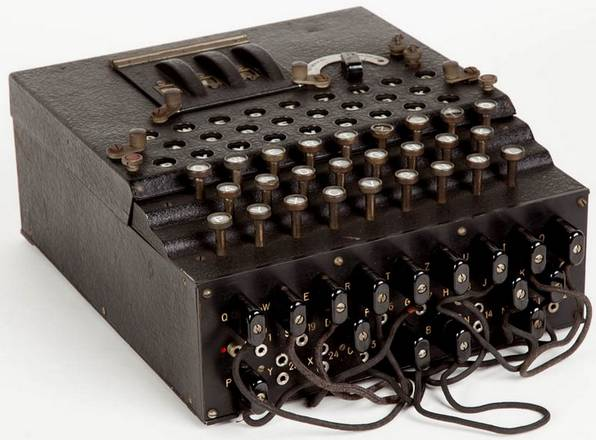

Alan Turing
Padre dell'Informatica
LA SVOLTA DELLA GUERRA, L’IMPORTANZA DELLA CRITTOGRAFIA DURANTE IL CONFLITTO.
La crittografia durante la seconda guerra mondiale ha giocato un ruolo di primaria importanza.
La Germania considerava inattaccabile la sua macchina Enigma, anche se già nel 1932 l'ufficio cifra polacco era riuscito a forzarla così come gli Inglesi.
Un ulteriore utilizzo strategico della crittografia si ritrovò in occasione dello Sbarco in Normandia, in cui gli Alleati inviarono falsi messaggi su un loro sbarco a Calais facendo sì che i Tedeschi inviassero in quella zona le loro migliori truppe.
Questo espediente fornì agli Alleati un vantaggio strategico, che consentí loro di incontrare una resistenza più bassa durante lo sbarco e l’avanzata.
Già a partire dal 1940 gli americani disponevano della macchina Magic con la quale erano in grado di decifrare i messaggi giapponesi, cifrati con la macchina Purple.
Alcuni storici americani sostengono, tra l’altro, che gli Stati Uniti sapessero in anticipo dell'attacco a Perl Harbour ma non lo impedirono per scuotere la popolazione e convincerla all'ingresso in guerra.
Altri studiosi affermano invece che gli USA sapessero di un attacco giapponese ma non il luogo in cui sarebbe avvenuto esattamente.
Tuttavia ci furono due occasioni in cui gli americani conoscevano bene le mosse nemiche: la Battaglia delle Midway e la morte dell'Ammiraglio Yamamoto.
Nel maggio 1942 il comandante della flotta giapponese, Yamamoto, aveva preparato un piano per attaccare le isole Midway a est delle Hawaii.
Grazie a Magic pero’ gli Americani decrittarono i piani nemici in anticipo, permettendo all'ammiraglio Nimitz, comandante della flotta USA, di preparare la battaglia. Quest'ultimo inoltre fece trasmettere falsi piani americani, utilizzando un cifrario che sapeva essere stato forzato dai giapponesi.
Il 14 Aprile 1943 gli Americani decifrarono un messaggio giapponese circa la visita dell'Ammiraglio Yamamoto all’'isola di Bougainville.
Si sarebbe svolta il 18 successivo con la specifica dell‘ora di partenza, di arrivo e i tipi di aerei usati.
L'Ammiraglio Nimitz organizzò quindi una squadra di aerei che intercettò e abbattè l'aereo di Yamamoto, infliggendo una dura perdita ai giapponesi.
La vittoria americana alle Midway fu quindi dovuta in gran parte alla superiorità nella crittografia.
Riguardo alla Germania, la più conosciuta macchina cifrante a rotori è sicuramente Enigma, inventata nel 1918 da Arthur Scherbius, uno studioso tedesco di ingegneria elettrica.
La procedura prevedeva che Enigma venisse settata con impostazioni giornaliere e che ogni mese gli operatori ricevessero un cifrario con scritte le chiavi aggiornate.
I crittanalisti alleati, pertanto, potevano sfruttare il fatto che per un'intera giornata venisse usata sempre la stessa chiave per cifrare una gran quantità di messaggi.
Nel settembre 1932 l'ufficio cifra polacco chiamò tre matematici, Marian Rejewski, Henryk Zygalski e Jerzy Rozicki, e affidò a loro il compito di forzare la macchina Enigma la quale fu poi forzata nel giro di tre mesi grazie all’ausilio della macchina Bomba.
Nel dicembre dello stesso anno l'ufficio cifra francese venne in possesso della struttura del disco iniziale, che in seguito fu comunicata ai polacchi.
Rejewski fu in grado di ricostruire l'intera struttura interna di Enigma, ma tra il 1938 e il 1939 i tedeschi cambiarono le regole di cifratura e aumentarono i rotori da 3 a 5, moltiplicando di conseguenza le combinazioni possibili.
A questo punto, dato il numero elevatissimo di combinazioni, la macchina Bomba non fu più in grado di decifrare messaggi.
Bletchley Park, che durante la Seconda guerra mondiale era il sito dell'unità principale di Crittoanalisi del Regno Unito, fu riempito dei migliori studiosi del tempo: matematici, fisici, linguisti, studiosi di statistica, campioni di scacchi provenienti da ogni parte del mondo, assoldati dal governo inglese con lo scopo di decrittare le comunicazioni nemiche.
Il lavoro di queste persone fu coperto da segreto di stato e fu importantissimo per determinare la vittoria della guerra.
Il materiale fornito dai Polacchi agli Inglesi fu valido ma incompleto, e fu quindi Alan Turing a creare nel dicembre 1943 un prototipo sulla base del macchinario Bomba.
Esso venne realizzato poi da Max Newman e, dal 1944, fu in grado di decifrare sistematicamente tutti i messaggi dell'esercito tedesco, annullando il vantaggio tattico della Germania.